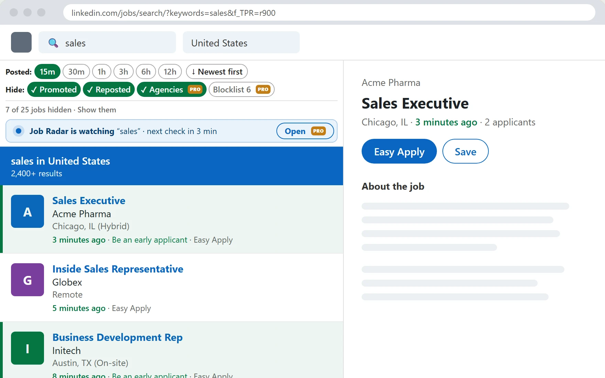

See LinkedIn jobs posted in the last hour first
One click filters your search to jobs posted in the last 15 minutes, 30 minutes or a few hours, sorted newest first.
- Time filters LinkedIn doesn't offer, right on the page
- Fresh jobs are highlighted with how long ago they were posted
- Works on LinkedIn's classic and AI-powered search